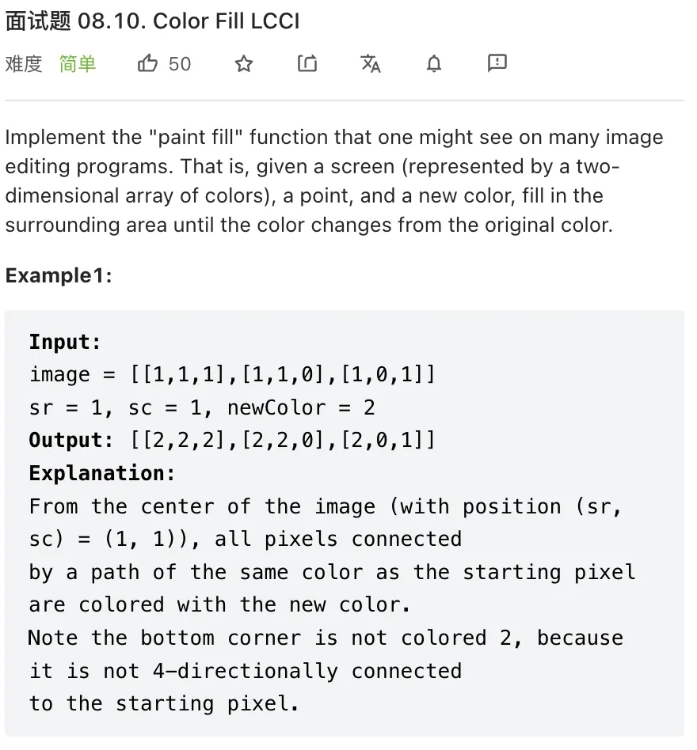
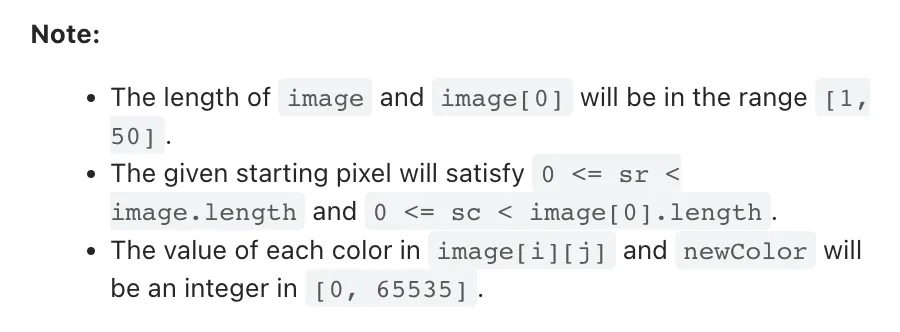

面试题 08.10. Color Fill LCCI
Question


✍🏽 My Solution
执行用时：0 ms, 在所有 Java 提交中击败了100.00%的用户
内存消耗：42 MB, 在所有 Java 提交中击败了68.74%的用户
/*
递归处理与指定节点相邻，且颜色相同，且不等于新颜色的节点。
退出条件 :
1.颜色值 和sr sc 的颜色值不一样 (周围区域不为初始颜色)
2.超出边界
3.被访问过了 (visited来记录该节点是否被访问过)
*/
class Solution {
public int[][] floodFill(int[][] image, int sr, int sc, int newColor) {
int n = image.length;
int m = image[0].length;
boolean[][] visited = new boolean[n][m];
dfs(image, visited, n, m, sr, sc, image[sr][sc], newColor);
return image;
}
private void dfs(int [][] image, boolean[][] visited, int n, int m, int sr, int sc, int oldColor, int newColor) {
if (sr < 0 || sr >= n || sc < 0 || sc >= m
|| image[sr][sc] != oldColor || image[sr][sc] == newColor || visited[sr][sc]) {
return;
}
image[sr][sc] = newColor;
visited[sr][sc] = true;
dfs(image, visited, n, m, sr-1, sc, oldColor, newColor); // 上
dfs(image, visited, n, m, sr+1, sc, oldColor, newColor); // 下
dfs(image, visited, n, m, sr, sc-1, oldColor, newColor); // 左
dfs(image, visited, n, m, sr, sc+1, oldColor, newColor); // 右
}
}
🧠 Thought Process
- Why did I choose this particular implementation?
- 參考力扣
- 递归处理与指定节点相邻，且颜色相同，且不等于新颜色的节点。 退出条件 : 1.颜色值 和sr sc 的颜色值不一样 (周围区域不为初始颜色) 2.超出边界 3.被访问过了 (visited来记录该节点是否被访问过)